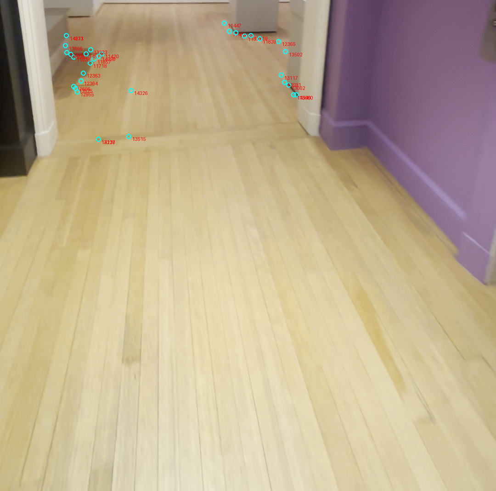
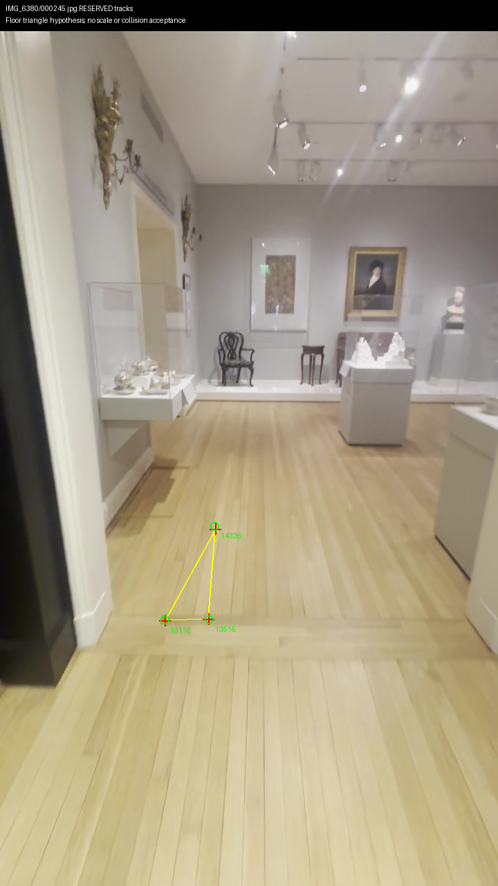
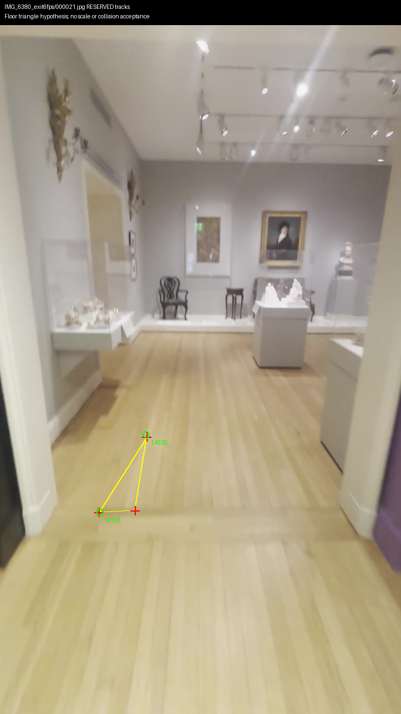
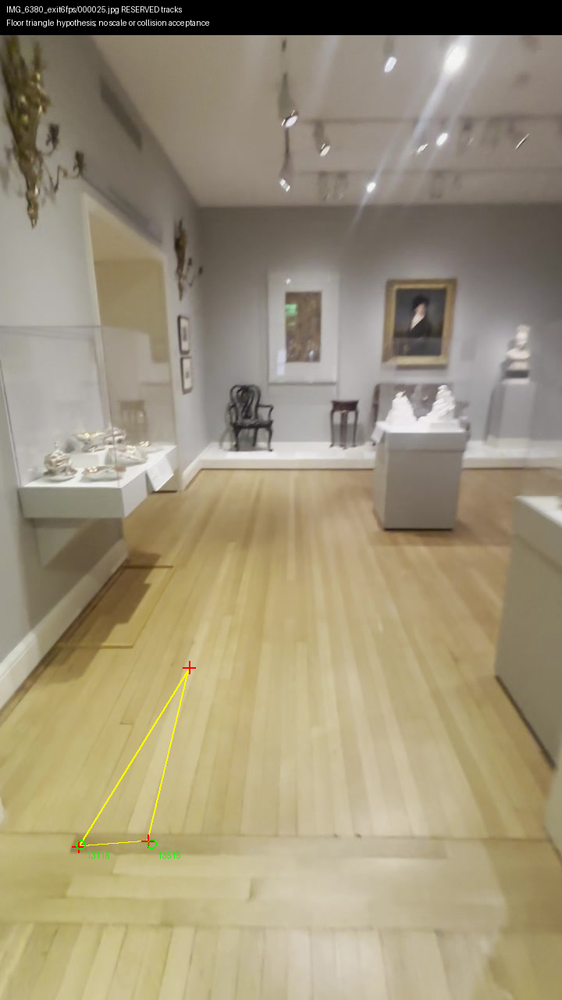
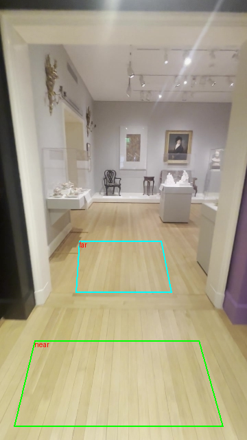
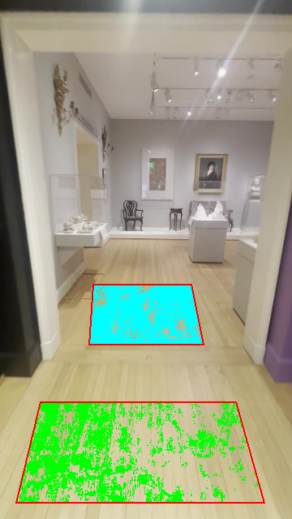
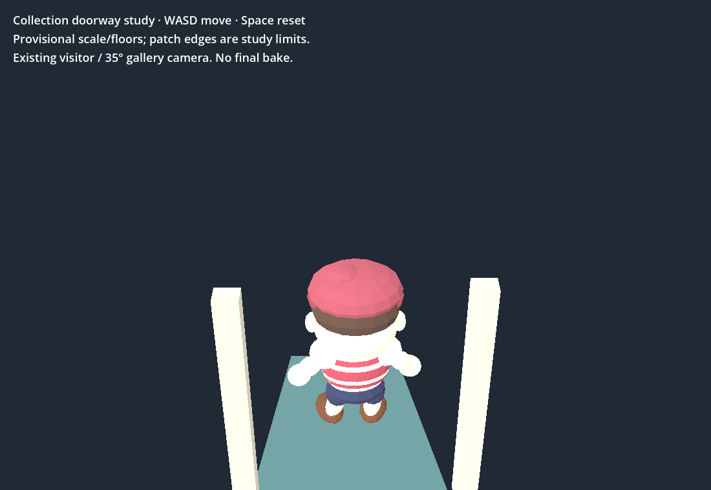
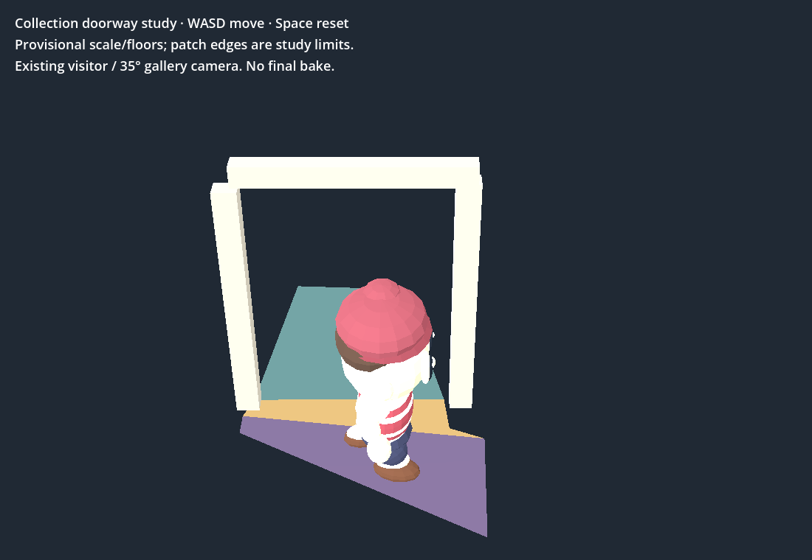

September 30, 08:30 UTC tick. Prototype evidence; no production integration.
Three source-visible floor tracks triangulated from corrected-model cameras 13/19. The earlier visit 122s predicts all three at 0.63 /1.64 /4.95px. Primary reserved 21/25 each lack one track. Plane tilt changes 17.93° at the95th percentile under ±2 camera-pixel perturbations: unsuitable for collision acceptance.
New six-image CUDA trial excludes reserved 21/25. Near-floor depth covers 38.62%; far-floor 87.48%. Candidate normals differ 3.16°. Untrimmed block-check p90 residuals 0.01165 /0.01419 world units; metric scale and cross-view planarity remain unverified.
| Check | Result |
|---|---|
| Historical bounded walk, native + Chrome RTX 4070 SUPER | 24 collision/camera checks; real keyboard crossing and return pass |
| Shell isolated playtest | Four prior failures; no full-app acceptance |
| Repository and diagnostic controls | Pass; eight ObjectDB leak warnings. Native initial missing-output-directory error retained. |
| Spend / scope | $0; Muse recorded total unchanged at $0.02. Viewer preserved; map remains open. |
Run the existing bounded doorway study · WASD, Space reset · Depth report · Primary triangle report · Exploratory revisit report








Next: freeze corresponding floor masks in source 13 and the earlier visit 245, then compare their cached corrected-model depth against the source 19 candidate planes. Do not rerun completed depth or inherit historical scale/collisions.